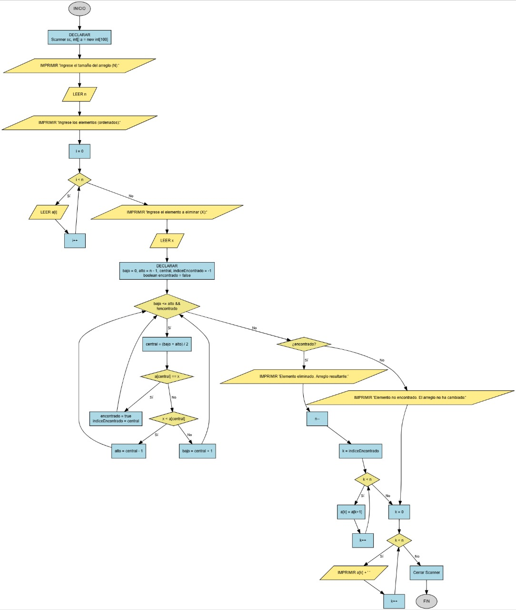

Eliminar Elemento (Arreglo Ordenado)
Escribe un programa que elimine un elemento de un arreglo que ya está ordenado. Para hacerlo más eficiente, deberás usar el algoritmo de búsqueda binaria.

Requisitos
Todo el código debe estar dentro del método main.
- Pide el tamaño del arreglo con:
"Ingrese el tamaño del arreglo (N): ". - Pide los elementos con:
"Ingrese los [n] elementos del arreglo (deben estar ordenados):". - Pide el elemento a eliminar con:
"Ingrese el elemento a eliminar (X): ". - Usa búsqueda binaria para encontrar la posición del elemento.
- Si lo encuentras, elimínalo y muestra:
"Elemento eliminado. Arreglo resultante:". - Si no lo encuentras, muestra:
"Elemento no encontrado. El arreglo no ha cambiado:". - Al final, imprime el arreglo resultante en una sola línea, con elementos separados por espacios.
Ejemplo de uso esperado
Ingrese el tamaño del arreglo (N): 5
Ingrese los 5 elementos del arreglo (deben estar ordenados):
10
20
30
40
50
Ingrese el elemento a eliminar (X): 30
Elemento eliminado. Arreglo resultante:
10 20 40 50
Ingrese el tamaño del arreglo (N): 4
Ingrese los 4 elementos del arreglo (deben estar ordenados):
10
20
40
50
Ingrese el elemento a eliminar (X): 30
Elemento no encontrado. El arreglo no ha cambiado:
10 20 40 50